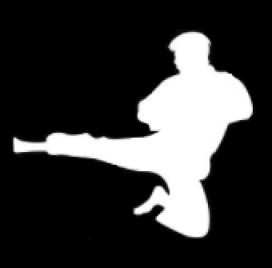

TaeKwonDo

A luta é a forma mais conhecida da competição de TaeKwonDo, nela, dois
competidores de mesma categoria adentram a quadra octogonal com medidas
de 12x12m, devidamente equipados com suas proteções e combatem golpeando
geralmente com chutes, em categorias gerais no tronco e a partir da
graduação de faixa preta também na cabeça.
A duração de um combate pode variar de acordo com a idade e graduação
dos atletas competidores, as lutas oficiais, vistas nas olimpíadas têm
duração de 3 rounds de 3 minutos cada, com intervalos de 1 minuto de
descanso entre cada round.
Os equipamentos obrigatórios a serem usados por todos os atletas
competidores de taekwondo são: Dobok branco tradicional (gola preta
permitida apenas para atletas de faixa preta), capacete e colete de cor
azul ou vermelha (dependendo do lado do dojan que o atleta irá
competir), protetor bucal, braceleira, protetor genital, caneileiras e
sapatilhas.
Também é valido lembrar que não se pode entrar em combate com
assessórios do tipo, aneis, correntes, brincos, pulseiras, relógios,
entre outros, pois estes no contato podem machucar o adversário.

A pontuação é marcada de forma eletrônica, com dispositivos sensoriais
colocados nas botas, coletes e capacetes dos competidores.
Cada
determinado grupo de golpes possui um valorde pontuação.
Golpes diretos na região do colete marcam 2 pontos.
Golpes
giratórios no tronco marcam 3 pontos.
Golpes diretos na cabeça
marcam 3 pontos e
golpes giratórios na cabeça marcam 4 pontos.
Ao final do tempo de luta, o competidor que possuir mais pontos
acumulados, vence o combate.

Existem também as penalidades, que causam perca desses pontos
acumulados, elas são classificadas em kyongo (falta leva) ou kanthon
(falta grave).
Algumas faltas consideradas leves são: chutes não intencionais em
regiões inadequadas como pernas e génitais; quedas, saída da área
demarcada para combate, fugir da luta, entre outras. Essas ocasionam a
marcação de uma falta, e o repasse de um ponto para o adversário.
Algumas faltas graves são: chutes intencionais em regiões não
permitidas, socos no rosto, atingir o adversário no chão, agressão
verbal ou não-verbal ao árbitro, adversário ou técnicos, entre outros.
Dependendo da conduta em relação a faltas graves, ou quando marcado uma
quantidade de 10 faltas leves ou 5 graves, o competidor é
desclassificado.

A modalidade de poomsae não é muito conhceida, mas vem ganhando força e
visibilidade nos últimos anos. Nesse modelo de competição, as formas
(postura, bases e defesas) são avaliadas por 4 árbitros laterais,
respeitando a graduação dos competidores.
O competidor adentra a quadra de 12x12m e ao centro realizará um
conjunto de movimentos que simulam um combate para ser avaliado.
Cada atleta competidor, inicia a execução dos movimentos com 10 pontos e
a cada movimento errado ele será penalizado, se seu erro for leve, ele
perde 0,3 e se o erro for grave, ele perde 0,7 diretamente na pontuação.
Do grupo de competidores daquela categoria o que terminar com maior
pontuação e menor quantidade de penalidades é o campeão.

Os uniformes para esse tipo de competição é diferente do dobok
tradicional (gola V e fechado), nas competições oficiais de poomsae o
dobok é aberto e a cor da calça e da gola variam de acordo com o sexo e
idade do competidor.
Na divisão catede (12 a 14 anos), os meninos usam camisa branca
(colarinho Vermelho/Preto) e calça azul; e as meninas usam camisa branca
(colarinho Vermelho/Preto) e calça vermelha.
Na divisão Júnior e Senior (15 a 50 anos), os meninos usam camisa branca
e calça azul escura; e as meninas camisa branca e calça azul clara.
Na divisão Master (51 anos acima) todos podem usar camisa amarela e
calça azul escura.

Ainda assim, o poomsae possui duas formas de competição, o reconhecido e
o estilo livre.
O reconhecido são os movimentos padrões realizados de acordo com cada
faixa nos exames de graduação. Nele existem as categorias: masculino
individual, feminino individual, equipe masculina (3 meninos), equipe
feminina (3 meninas) e pares (que podem ser 2 homens, 2 mulheres ou
mista, 1 homem e 1 mulher).
O estilo livre também conhecido como freestyle, é uma mistura de formas,
defesas, ataques, passos de dança, música, entre outros. Neste existem
as categorias: masculino individual, feminino individual, pares e equipe
mista (composta po 5 membros sendo mais que 2 masculinos e 2 femininas).
Os competidores de poomsae podem competir em mais de duas das categorias
de acordo com a restrição de gênero e idade.